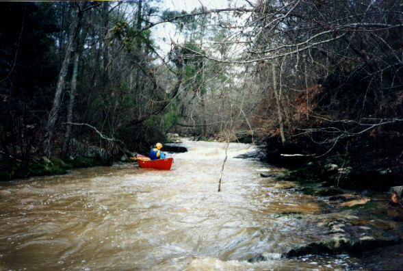
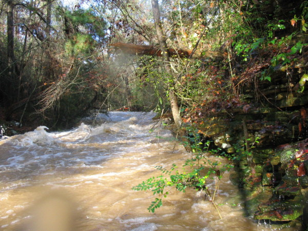
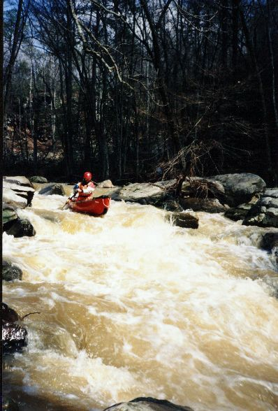
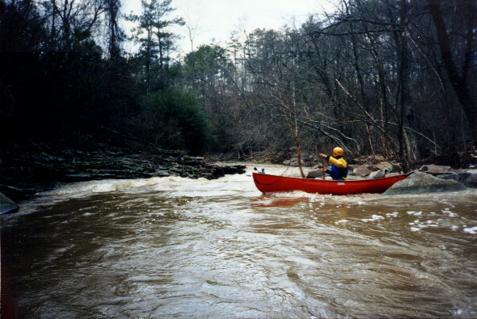
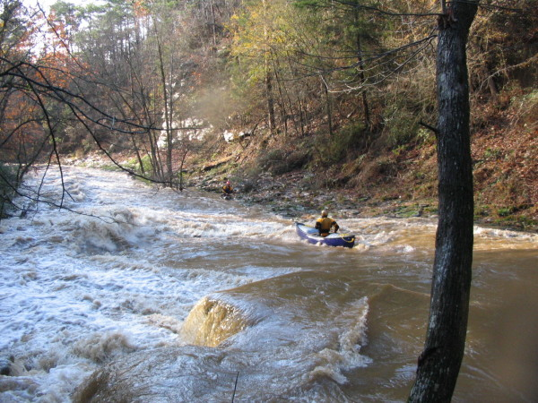
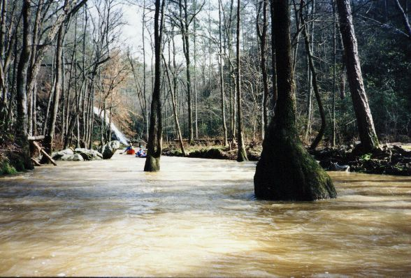
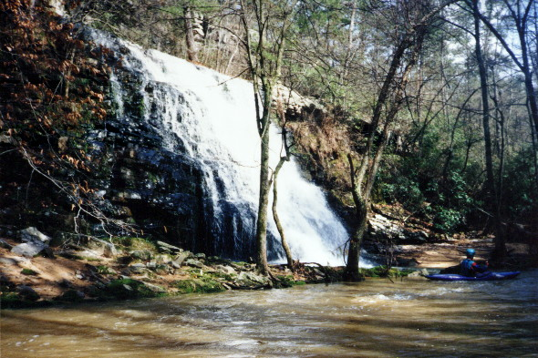
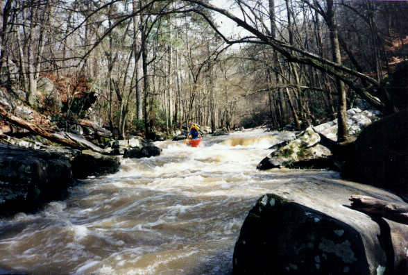
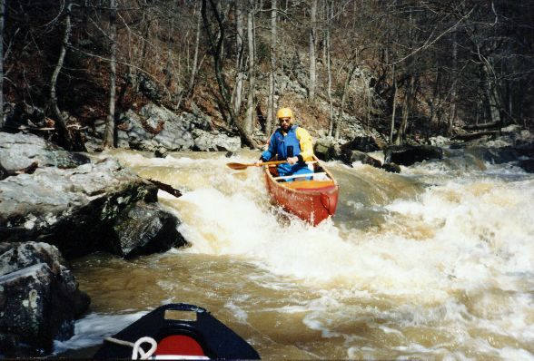
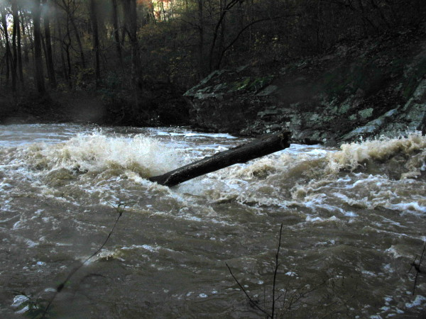

Hog Creek
These Pictures are form two trips. One was at low water in 1996. The other was at beefy to near flood in 2004.
|  | Mike Abernathy getting a shot of a rapid at the top of the run in 1996. This shot is only notable because the next picture... |
|  | Shows the same rapid at a wee higher level in 2004. |
|  | gMark D'Agostino on a little number we called Stun Line. |
|  | A slide - Mike with John Parker in the distance. |
|  | Dave Branham avoids the big breaker on a similar slide in 2004. |
|  | John Parker and Mike Abernathy among the gum trees. Not whitewater but darn scenic. |
|  | Hog has many very scenic waterfalls cascading over the cliffs that line the first 2/3 of the run. |
|  | Mike on a rapid further into the run |
|  | Mike Abernathy on Swine Flume |
|  | This log is the primary reason we walked the preceding rapid |